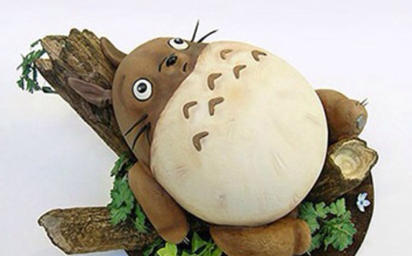
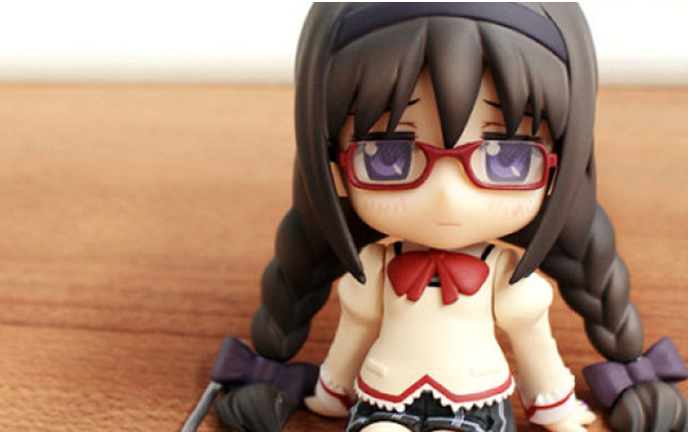
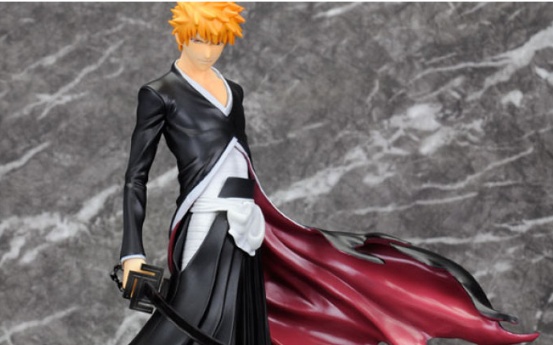
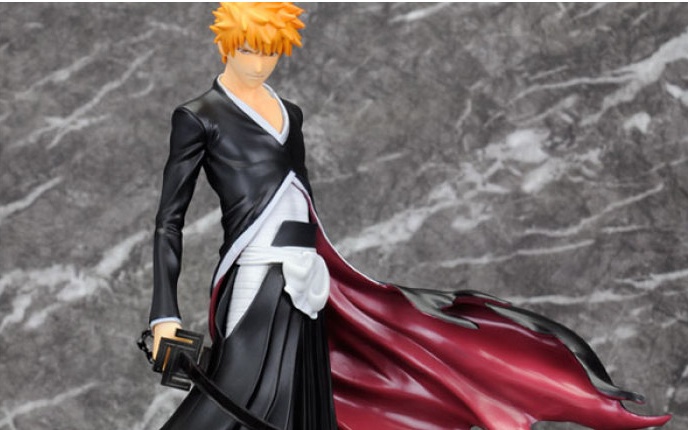

灼华小萌粘土手作特价班 | 带你系统学习超轻粘土手办
“手办”是“首办”同音衍生出的译名。“首办”是玩具厂在未开发出新模前，回预先请师傅“起办”，师傅造出来的“原型”行内称之为“首办”。即“首先/初型”的含义，可以手作亦可用车床/铁床制作。
很多人会误解为，那些PVC塑料或树脂材质的摆件人形等都叫手办，但真正意义上的手办指的是表现原型师个性的GARAGE KIT (简称GK)，是指没有涂装的模型套件。但现在在中国大陆很多玩家都习惯了手办泛指到所有人形作品的叫法。
因为开模程序复杂，有很高难度，因此原模价格非常昂贵。目前适合做手办的主流材料有粘土，油泥，石粉等，这些材料均需要从原型开始捏制; 后期需要手工精心打磨，分件，涂装等一系列复杂工艺。
本课程采用当下最受欢迎的超轻粘土进行教学，其材质手感舒适，色彩多样，易塑型，无需加热烘干设备即可相关工具上手较快，不论有无美术雕塑等基础，成型，均可学习，创作，备受年轻人及模型爱好者青睐。
【 导师介绍 】
手工客签约导师 灼华小萌
·手办定制小店店主
·5年全职捏土经验
·粘土圈内导师
>>灼华小萌，有5年全职捏土经验，开手办定制小店3年多，目前已有上百件作品。作品风格接近画稿，细节处理干净利索。被线下多家美育机构聘请粘土授课，有着与多位画师合作过原创角色手办、海外漫画家邀请制作角色初型、阴阳师手游官方展邀请制作人气角色等丰富
的制作经验。
【 老师作品展示 】
【 课程安排 】
| 时间 | 课程 |
|---|---|
| 2017.09.08 | 超轻粘土材质介绍，常用工具使用方法一个基本造型练习（成品一只小猫） |
| 2017.09.08 | 常用头发与发型的制作 |
| 2017.09.08 | 常用头发与发型的制作 |
| 2017.09.08 | 常用头发与发型的制作 |
| 2017.09.08 | 常用头发与发型的制作 |
| 2017.09.08 | 超轻粘土材质介绍，常用工具使用方法一个基本造型练习（成品一只小猫） |
| 2017.09.08 | 常用头发与发型的制作 |
| 2017.09.08 | 常用头发与发型的制作 |
| 2017.09.08 | 常用头发与发型的制作 |
| 2017.09.08 | 常用头发与发型的制作 |
| 2017.09.08 | 常用头发与发型的制作 |
| 2017.09.08 | 常用头发与发型的制作 |
| 2017.09.08 | 常用头发与发型的制作 |
| 2017.09.08 | 常用头发与发型的制作 |
| 2017.09.08 | 超轻粘土材质介绍，常用工具使用方法一个基本造型练习（成品一只小猫） |
| 2017.09.08 | 当红动漫正比例人物制作综合(1) |
| 2017.09.08 | 当红动漫正比例人物制作综合(2) |
| 2017.09.08 | 当红动漫正比例人物制作综合(3) |
| 2017.09.08 | 当红动漫正比例人物制作综合(4) |
| 2017.09.08 | 超轻粘土场景制作 |
| 2017.09.08 | 超轻粘土与其它材料结合运用讲解 |
【 教学作品展示 】
  

【 关于课程 】
1、课时按讲课内容而定，无固定时长;
2、学习时间是自主而定的,定购了课程后，可以在专栏里随时观看学习;
【 订阅须知 】
此栏目为人民币388元/年，订阅成功后，即可进入特价班(2017年9月8日-2018年8月31日)，与群内同学老师交流互动，定期参与作业点评辅导，到期后延期保留 2个月供大家查阅专栏;
栏目形式为“视频教程+图文+语音+15秒视频专栏”，订阅成功后不支持退款，不支持转让课程，请您理解;
每个特价班人数上限2000人。特价班时间到期自动解散;
版权归原作者所有，严禁翻录成任何形式，严禁在任何第三方平台转播，违者将追究其法律责任;
群内大神众多，氛围良好，请自觉爱护环境，积极参与探讨，不要刷屏、广告、外链，愿大家拥有小而美的世界。